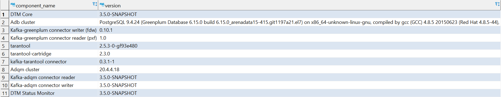

CHECK_VERSIONS
Запрос позволяет получить информацию о версиях следующих программных компонентов:
В ответе возвращается:
- объект ResultSet с записями, содержащими информацию об именах и версиях компонентах, при успешном
выполнении запроса (см. рисунок ниже);
- исключение при неуспешном выполнении запроса.

Ответ CHECK_VERSIONS
Синтаксис